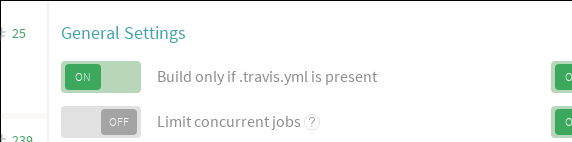
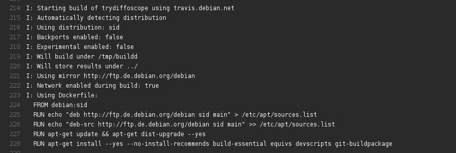

What is this?
travis.debian.net is a hosted service for projects that host their Debian packaging on GitHub to use the Travis CI continuous integration platform to test builds on every update. Amongst many other advantages, this helps catch issues as early as possible and avoids having to run long package builds on one's own computers.
Whilst possible without travis.debian.net, using this service not only avoids unwieldy duplication of configuration, it works around backwards-compatibility issues in supporting tools in older Debian releases.
travis.debian.net additionally supports running autopkgtest tests and disabling network access during builds.
Quick setup
- Enable builds for your package on travis-ci.org:
- Ensure "Only build if .travis.yml is present" is enabled: 
-
Add .travis.yml to your
git-buildpackage
branches:
$ wget -O.travis.yml http://travis.debian.net/travis.yml $ git add .travis.yml $ git commit -m "Add .travis.yml from <http://travis.debian.net>"
-
If there already exists a .travis.yml file, simply override
it; ensuring that subsequent upstream merges retain the
travis.debian.net version. Additionally for "3.0 (quilt)"
packages, you will need to:
$ echo 'extend-diff-ignore = "^\.travis\.yml$"' >> debian/source/options $ git add debian/source/options $ git commit -m "Add /.travis.yml to extend-diff-ignore in debian/source/options."
-
You should now be able to build your package:

How it works
At it's core travis.debian.net is a hosted POSIX shell script that is executed within the Travis CI test environment.
First, travis.debian.net detects which release of Debian the branch is targeting based on the current branch name. The experimental suite and all varieties of backports are intelligently detected. A debian/changelog is created if one does not exist.
A throwaway Docker image is then created containing all the required build-dependencies. The package is then built in this isolated environment with no access to the internet.Lintian is run on the result and the binary packages are saved to the parent directory.
Configuration
Configuration is performed by setting environment variables. You can do this within the Travis CI web interface itself.
Please note that the API is currently unstable.
- DEB_BUILD_OPTIONS
- This variable is passed without modification to the build process and modifies the build process as outlined in Debian Policy.
- TRAVIS_DEBIAN_DISTRIBUTION
- Which distribution of Debian the package should be built in. By default, this is automatically detected from the branch name.
- TRAVIS_DEBIAN_BACKPORTS
- When true, the corresponding backports repository will be enabled in /etc/apt/sources.list. If TRAVIS_DEBIAN_DISTRIBUTION is not set, the value is automatically detected.
- TRAVIS_DEBIAN_SECURITY_UPDATES
- When true, the corresponding repository for security updates will be enabled in /etc/apt/sources.list. If not set, updates are automatically enabled for the distributions that have security support.
- TRAVIS_DEBIAN_EXPERIMENTAL
- When true, Debian's experimental repository will be enabled. If TRAVIS_DEBIAN_DISTRIBUTION is not set, the value is automatically detected.
- TRAVIS_DEBIAN_MIRROR
- Which Debian mirror to use. By default, deb.debian.org is used.
- TRAVIS_DEBIAN_EXTRA_REPOSITORY
- If the package has some dependencies not found in Debian, you can add your own repository to the build using this variable. The format is the same as /etc/apt/sources.list, for example "https://my.repo.net/debian/ stretch main". Note that the double-quotes are required to ensure Travis correctly exports the variable.
- TRAVIS_DEBIAN_EXTRA_REPOSITORY_GPG_URL
- Location of the public key of the extra repository defined in TRAVIS_DEBIAN_EXTRA_REPOSITORY, so that its packages can be authenticated.
- TRAVIS_DEBIAN_TARGET_DIR
- Which directory to store the results of the build. By default, the packages are stored in the parent directory.
- TRAVIS_DEBIAN_BUILD_DIR
- Which directory to build under. By default, /tmp/buildd is used.
- TRAVIS_DEBIAN_NETWORK_ENABLED
- By default, the network is disabled during the package build process. If your build really needs internet access, set this value to true.
- TRAVIS_DEBIAN_AUTOPKGTEST
- When true, run autopkgtest tests after a successful build. By default, tests are attempted if a debian/tests/control file exists or debian/control has the Testsuite: autopkgtest header.
- TRAVIS_DEBIAN_INCREMENT_VERSION_NUMBER
- When true, increment the version number of the package by appending a new entry to debian/changelog to reflect the Travis CI build number. By default, the package version is left unchanged.
Frequently asked questions (FAQ)
- Q: But wget | sh - is insecure!
- A: Of course, and you should never run such a command on your own machine. However, not only does Travis-CI build within throwaway containers that you are not responsible for, cannot trust, and generally don't care about, there is zero expectation that the resulting .deb files are to be used or installed anywhere.
Links
Copyright
Copyright © 2015, 2016, 2017 Chris Lamb <lamby@debian.org>
This program is free software: you can redistribute it and/or modify it under the terms of the GNU General Public License as published by the Free Software Foundation, either version 3 of the License, or (at your option) any later version.